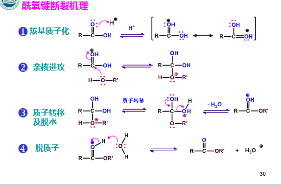
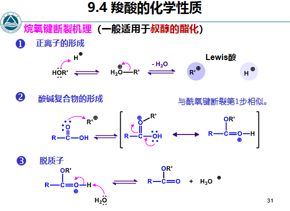
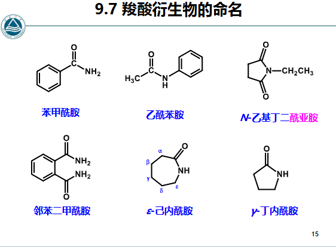
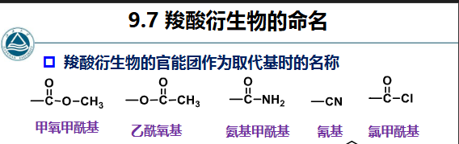
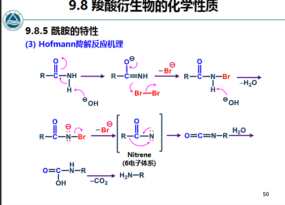
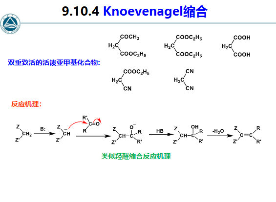
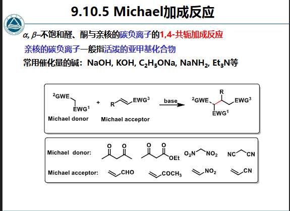
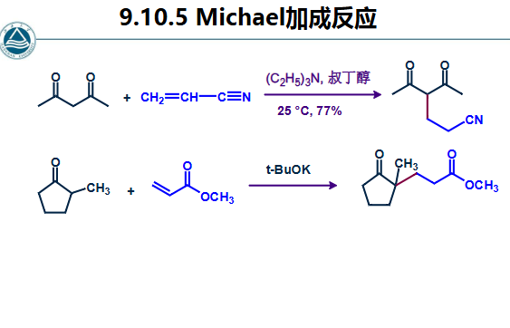

有机化学9-1羧酸及其衍生物9-1 20260518.pdf
有机化学9-2羧酸及其衍生物9-2 20260521.pdf
有机化学9-2羧酸及其衍生物9-2 20260526.pdf
羧酸 §
- 羧酸系统命名（IUPAC命名）：
与醛类似
① 选择含羧基的最长碳链作为主链，称“某酸”；
② 从羧基碳 开始编号，取代基位次也可用希腊字母
α，β、γ、
δ等表示，最末端碳原子可用 ω表示。
- 不饱和脂肪酸：
选择同时含有羧基和不饱和碳原子在内最长碳链为主链，称为
“某烯酸”或“某炔酸”，编号时从羧基碳开始。
一元的脂环族羧酸：
可以将其看做甲酸衍生物，将环做为取代基。
- 多元羧酸：
选择含有尽可能最多羧基在内的最长碳链为主链，并在“酸”
前面标明羧基数目。
- 芳香酸：
以苯甲酸为母体，加上其它取代基的位次和名称，编号从羧基
所连碳开始。
化学性质分析 §

RCOOH>H2CO3>PhOH>H2O>HC≡CH>R−NH2>R−H
有EWG基团分类 连接-COOH则使H+的电离增加，酸性增强
有EDG则减弱酸性，原理同上
在Ph上则是邻位影响最大
反应 §
- -OH被取代，生成羧酸衍生物（酰卤，酸酐，酯类，酰胺）
- 生成酰卤取代
- R−COOH+SOCl2或PCl3或PCl5变成R−COCl
- R−COOH+PBr3生成R−COBr
- 生成酸酐 控温 取代
- 2equiv羧酸用P2O5脱水得R1−CO−O−OC−R2，连接EDG的脱-OH，连接EWG的脱H
- 直接加热也能脱水制备酸酐
- 生成酯类取代
- 需要酸催化，可逆反应
- 有两种类型：
- 羧酸脱-OH

- 醇脱-OH（生成正离子）（用于叔醇的酯化反应）立体选择性

- 酰胺 取代
- 一般用酰卤或酸酐和NH3或者R−NH2制备
- 还原 还原
- 只能用LiAlH4或B2H6还原：R-COOH→R−CH2OH
- 不可用NaBH4
- 脱羧反应 脱气体
- R−COOH，R是EWG时容易发生
- 反应：R−COOH在NaOH和Δ下生成R−H和CO2 控温
- 应用：增长碳链，Kolbe合成法 人名反应：电解羧酸盐溶液，在水和甲醇溶液里进行，例如：CH3−R−COONa电解得CH3−R−R−CH3
- 应用2：二元酸的受热反应
- 碳链较短的二元酸：脱一个羧基，生成一元酸和CO2
- 碳链较长的：脱水形成环状酸酐，容易形成五元环或六元环化合物，称作Blanc规律 人名反应
- α-H反应
- Hell-Volhard-Zelinsky反应 人名反应 取代
- R−CH2−COOH在Br2或Cl2+P或S下，α-H被卤素取代，生成R−CHX−COOH
- 继续酯化，加Zn，得到R−CH(ZnX)−COOR′，称作Reformatsky试剂 人名反应
- X可用其他东西取代 取代，比如用NaCN加氰基，NH3加氨基，NaOH加羟基
- 合成羧酸
- 烃类的氧化，CO制备（见pdf）
- 伯醇和醛的氧化 氧化
- −CH2OH和-CHO在K2Cr2O7和酸性条件下被氧化成-COOH 控pH反应
- 甲基酮的反应
- R−CO−CH3先用Br2和NaOH反应，再酸性水解得到R−COOH
- 腈的水解
- R-CHO先用HCN反应得羟基腈，然后水解得羟基酸
- 格氏试剂制备 人名反应
- R−MgX与CO2反应得R−COOMgX，再水解得到R−COOH
- 酚羟基酸
- Ph−ONa+CO2再酸性水解生成邻位o-HO-Ph-COOH
- Ph−OK用上述条件生成对位p-HO-Ph-COOH Ph上的位置关系，此反应成为Kolbe-Schmitt反应 人名反应
- 羟基酸的反应
- α-羟基酸2equiv在加热下成酯
- β-羟基酸的-OH在酸性条件下α-C与β-C成双键 控pH反应
- γ和δ-羟基酸在酸性条件下成内酯 控pH反应
- 羟基酸的制备
- 水解法R−CHO1. NaHSO32. NaCNR−(OH)CNH+R−(OH)COOH
- Reformatsky反应（见上） 人名反应
羧酸衍生物 §
- 酰胺：将羧酸的酸换成酰胺，如果是XX胺类就X酰X胺，如果是成环，就叫内酰胺，比如见下图

- 腈的命名，将羧酸的酸换成腈
- 酸酐：
- 同酸，X酸酐
- 不同酸，按照酸的顺序，X酸X酐
- 酯：酸名醇名酯
- 命名的官能团顺序排行：羧酸>磺酸>酸酐>酯类>酰卤>酰胺>腈>醛酮>醇>酚>胺>醚 命名
- 羧酸衍生物作为官能团的命名：从远端按照基团依次向近端命名

化学性质分析 §

反应 §
- 亲核取代 取代
- 和亲核试剂反应R−CO−LNu−或HNuR−CO−Nu Nu和E L
- 水解：R−CO−LH2O酸性或碱性条件R−COOH 生成羧酸 控pH反应
- 酰胺水解生成NH3
- 氰基水解生成NH4+
- 醇解：R−CO−LR′OH酸性或碱性条件R−COOR′ 生成酯 控pH反应
- 氨解：R−CO−LR′NH2R−CO−NHR′ 生成酰胺
- 相对反应活性：酰氯>酸酐>羧酸>酯类>酰胺
- 原理：L的吸电子效应越强，使得羰基碳的电子云密度更低，更呈δ+，更易被Nu进攻，或者：L的碱性越弱，越容易离去
- 与有机金属试剂反应 加成
- 格氏试剂 R−CO−LR′MgXR−CO−R′1. R’MgX2. 酸性水解RC(OH)R2′ 最终生成叔醇，如果控低温 控温可以停留在酮的阶段，如果用腈，则最后是酮
- R2CuLi：活性较低，只能和酰氯和醛酮反应，常用于从酰氯制备酮R−COClR2′CuLi,乙醚R−CO−R′
- 还原 还原
- 酰卤，酸酐，酯类R−CO−LLiAlH4H2OR−CH2−OH
- 酰胺R−CO−NR2LiAlH4H2OR−CH2−NR2 不生成醇，而是对应的胺类
- 腈，同酰胺，生成−NH2
- 还原剂也可用LiAlH[OC(CH3)3]3或者LiAl(OEt)3
- 用Na-醇还原酯类R−COO−R′Na, EtOH, ΔR−CH2OH 称为Bouveault-Blanc反应 人名反应，特点是不还原不饱和键，所以可以制取不饱和醇
- Rosenmund还原 人名反应：利用Lindlar催化剂将R−CO−L还原成醛基，不会再继续还原R−CO−LH2Pd-BaSO4,喹啉-SR−CHO
- 酰胺的反应
- 酰胺同时具有酸碱性
- 酰胺的脱水：R−CONH2P2O5ΔR−CN R−CONH2SOCl2苯, ΔR−CN 控温
- Hoffman降解 人名反应 R−CONH2X2NaOHR−NH2+CO2

特点：α-C的手性不变
- Curtius重排和Schmidt重排 人名反应
- R−COCl+NaN3→R−N=C=O+N2水解R−NH2 R−COOH+HN3→R−N=C=O+N2水解R−NH2
- H2CO3衍生物：
- 光气CO+Cl2Δ,活性炭COCl2NH3CO(NH2)2
- 尿素制备：CO2+NH3ΔCO(NH2)2
- 酮-烯醇互变异构
- 烯醇互变异构在羧酸衍生物里均可出现，但是稳定性较低
- β-二羰基化合物（R−CO−CH2−CO−R′)，会有一个羰基出现烯醇互变异构，如果R,R’为EDG则烯醇式不稳定，如果一个基团是EWG则容易在这一侧形成烯醇互变，原因是容易形成共轭，双键更加稳定，可以用反应验证：CH3C(OH)=CH−COEtPCl5CH3C(Cl)=CH−COEt
- Claisen缩合 人名反应
- RCH2−CO−OR′+H−CH(R)COOR′碱RCH2CO−CH(R)COOR′+HOR′ 原理：2equiv的酯，一个脱OR−一个脱α-H，原理是碱拔H后C−和CO+成键，作用为合成1,3-二羰基化合物 控pH反应 类似羟醛缩合
- Dieckmann缩合 人名反应
- 原理和Claisen一致，是端二酯分子内缩合生成环
- 乙酰乙酸乙酯的反应：
- 分子式：CH3−CO−CH2−COO−Et
- 先在碱下加热脱羧，再酸化，生成丙酮和CO2 控pH反应 控温
- 烷基化：中间的−CH2−的H有酸性，用Nu进攻，可以上烷基，比如：CH3−CO−CH2−COO−EtCH3I,碱性CH3−CO−C(CH3)2−COO−Et 控pH反应 需要碱性环境利于进攻
- Knoevenagel缩合 控pH反应 人名反应
1. 概念：醛、酮和含有双重致活的活泼亚甲基化合物在弱碱（胺、吡啶、哌啶） 催化下的缩合反应 R−CHO+EWG−CH2−EWG苯, Δ吡啶R−C=C(EWG)2
2. 原理：是-CHO或-CO-的C和CH2成双键

- Michael加成 控pH反应 人名反应
- α,β-不饱和醛酮和Nu C−的1,4-共轭加成 EWG−C−EWG+R−C=C−EWG强碱EWG2−C−C(R)−C−EWG


- Robinson环化 人名反应：Michael加成的产物再在碱性条件下分子内羟醛缩合成环 控pH反应
- EWG−CH2−EWG的H也活泼，C也能被Nu进攻，从而延长碳链